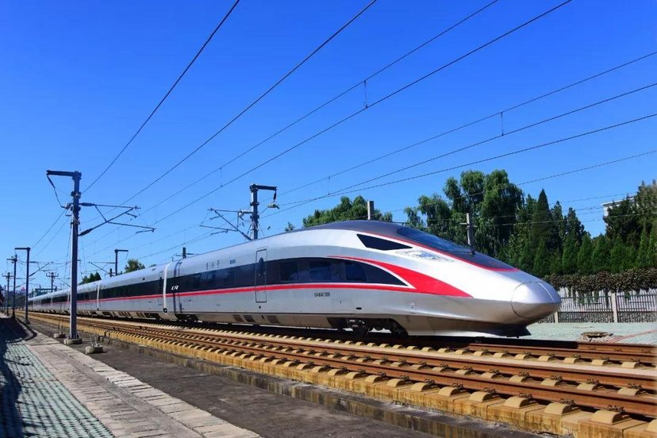
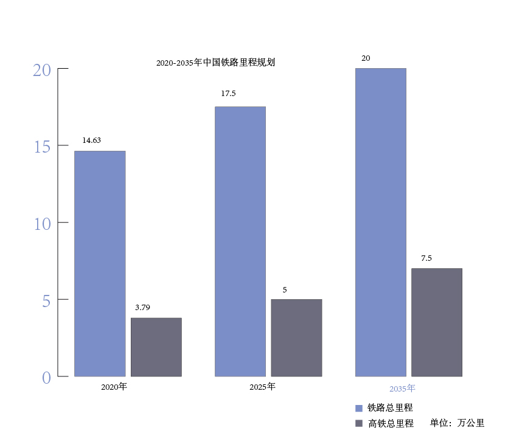
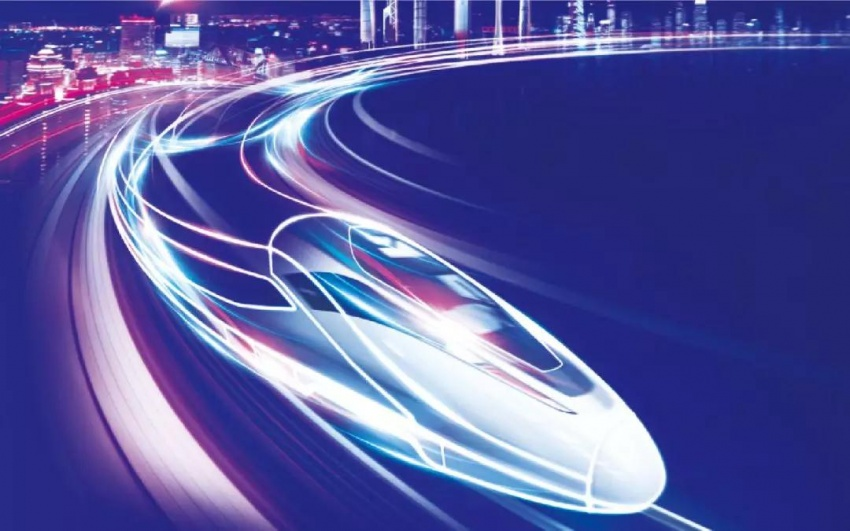

铁路是国家重要交通基础设施和重大民生工程，“十三五”期间，全国铁路营业里程增加到14.63万公里，铁路客运量和货运量都呈增长趋势。新时代交通强国铁路先行，“十四五”期间，我国铁路建设任务仍十分繁重，在建、已批项目规模达3.19万亿元，将坚持补短板强弱项防风险，分类分层推进建设。如今，我国铁路网对20万以上人口城市的覆盖由2012年的94%扩大到2019年的98%，高铁网对50万人口以上城市的覆盖由2012年的28%扩大到2019年的86%；香港进入全国高铁网；除拉萨外的所有省会城市均已通高铁；京津冀、长三角等城市群内两小时畅行；北京、上海等大城市间实现1000公里4小时通达、2000公里8小时通达。
近年来，我国已经出台了多部关于铁路交通非常重要的发展规划，2016发布的《中长期铁路规划》中提出，到2025年，铁路网规模达到17.5万公里左右，其中高速铁路3.8万公里左右，网络覆盖进一步扩大，路网结构更加优化，骨干作用更加显著，更.好发挥铁路对经济社会发展的保障作用。但鉴于我国在十三五的高铁建设速度之快，我国十四五重新规划，到2025年全国高铁(含城际铁路)营业里程5万公里左右，展望到2030年，基本实现内外互联互通、区际多路畅通、省会高铁连通、地市快速通达、县域基本覆盖。。2020年发布的《新时代交通强国铁路先行规划纲要》纲要提出，到2035年，全国铁路网达到20万公里左右，其中高铁7万公里左右。20万人口以上城市实现铁路覆盖，其中50万人口以上城市高铁通达。全国1、2、3小时高铁出行圈和全国1、2、3天快货物流圈全面形成。到2050年，形成辐射功能强大的现代铁路产业体系，建成具有全球竞争力的世界一流铁路企业。
2020年8月13日，中国国家铁路集团有限公司发布的《新时代交通强国铁路先行规划纲要》还提出新时代中国铁路的发展目标，从2021年到本世纪中叶，分两个阶段目标推进。到2035年，率先建成服务安全优质、保障坚强有力、实力国际领先的现代化铁路强国。到2050年，全面建成更高水平的现代化铁路强国，全面服务和保障社会主义现代化强国建设。在到2035年的第一个阶段，我国力争率先建成服务安全优质、保障坚强有力、实力国际领先的现代化铁路强国。其中，基础设置规模质量、技术装备和科技创新能力、服务品质和产品供给水平要处于世界领先地位；运输安全水平、经营管理水平、现代治理能力位居世界前列；同时全面增强绿色环保优势和综合交通骨干地位、服务保障和支撑引领作用以及国际竞争力和影响力。到2050年的第二个阶段时，要全面建成更高水平的现代化铁路强国，全面服务和保障社会主义现代化强国建设，让铁路服务供给和经营发展、支撑保障和先行引领、安全水平和现代治理能力迈上更高水平；同时，智慧化和绿色化水平、科技创新能力和产业链水平以及国际竞争力和影响力在世界上保持领先位置。到本世纪中叶，形成辐射功能强大的现代铁路产业体系，建成具有全球竞争力的世界一流铁路企业。中国铁路成为社会主义现代化强国和中华民族伟大复兴的重要标志和组成部分，成为世界铁路发展的重要推动者和全球铁路规则制定的重要参与者。
蓝图已描绘，号角已吹响。全路干部职工将更加紧密地团结在以习近平同志为核心的党中央周围，不忘初心、牢记使命，以“交通强国，铁路先行”为己任，推动铁路高质量持续健康发展为决胜全面建成小康社会打下决定性基础。时间不会停止,发展的脚步也不会停滞,铁路部门正迈着铿锵有力的步伐,自豪地展示着中国铁路的伟大的成就。在“十四五”开局之年看向未来,作为国民经济的交通运输“大动脉”,中国铁路定会以奋斗者的姿态,矢志不渝的阔步前行,创造出更美好的未来。